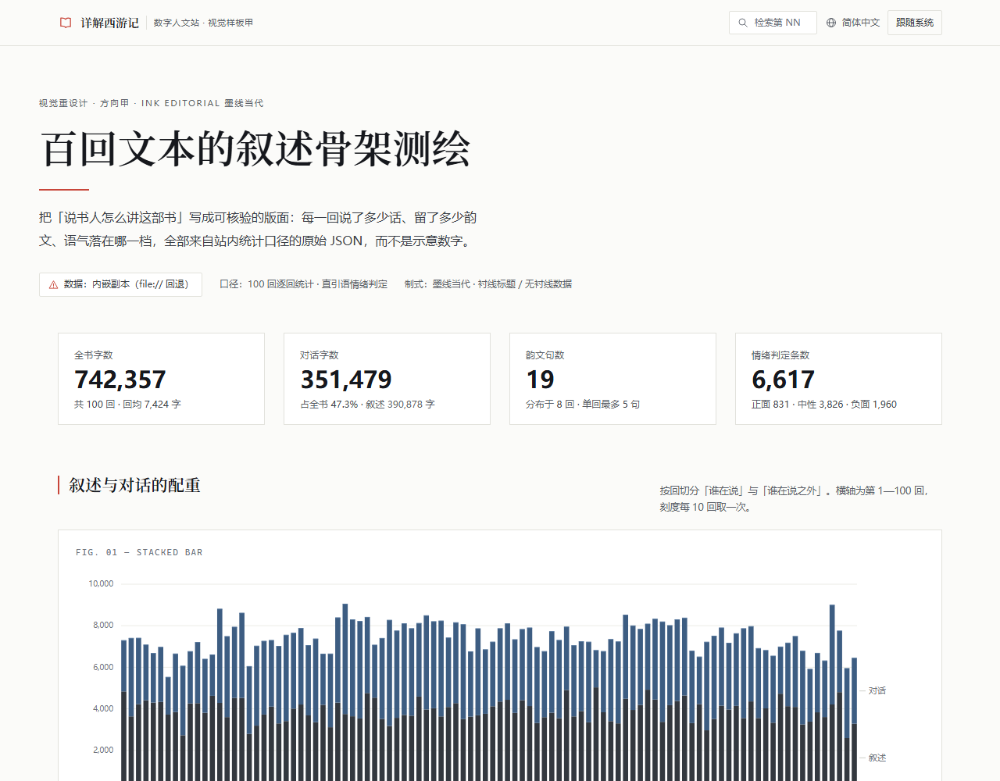
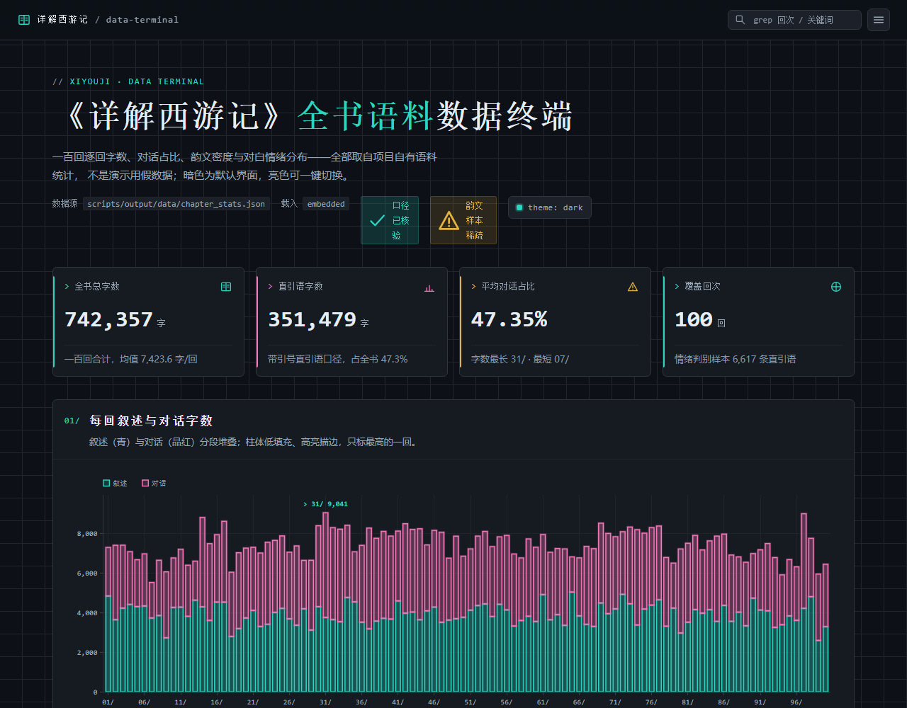
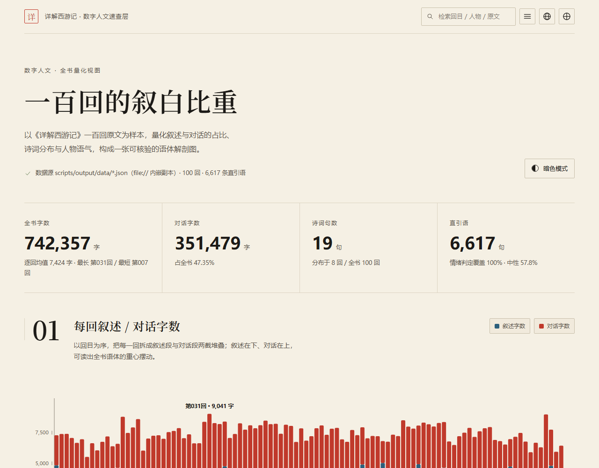

同一份真实数据（100 回逐回字数 / 对话占比 / 诗词密度 / 情绪分布）、同一套页面结构与图表逻辑，只有视觉语言不同——所以三者的差异全部来自设计本身。点开任一方向可看完整样板页（含明暗两态）。
冷白底 + 石墨墨 + 单一朱砂。标题衬线、数据与轴标签换无衬线；实心柱 + 顶部高光描边；用直接标注替代图例框；卡片只留 1px 边、无阴影。像一份高质量学术年鉴。
深墨底 + 青/品红/琥珀终端三色，暗色为默认。数据与标题等宽、正文无衬线；弱发光描边 + 交叉网格；面板化卡片 + 等宽前缀。像一台可翻阅的数据终端。
| 验收项 | 甲 Ink Editorial | 乙 Terminal Dark | 丙 Neo-Xuan |
|---|---|---|---|
| 样本体积 | 57.6 KB | 51.2 KB | 49.9 KB |
| 图标 | 8 枚 · 单枚 ≤0.32KB · 栅格对齐 | 8 枚 · ≤0.36KB · 栅格对齐 | 8 枚 · ≤0.40KB · 栅格对齐 |
| file:// 错误 / 外域请求 | 0 / 0 | 0 / 0 | 0 / 0 |
| 标签裁切 / 重叠 | 0 / 0 | 0 / 0 | 0 / 0 |
| 轴标签对比度（亮/暗） | 4.54 / 4.95 | 8.89 / 8.89 | 4.55 / 4.70 |
| 正文对比度（亮/暗） | 6.2 / 6.03 | 10.17 / 10.17 | 6.58 / 6.75 |
| 跟随系统深浅色 | ✓（auto） | ✓（暗为默认） | ✓（首次读系统偏好） |



| 维度 | 甲 Ink Editorial | 乙 Terminal Dark | 丙 Neo-Xuan |
|---|---|---|---|
| 底色 | 冷白 #FBFBF9 | 深墨 #0D1117（默认暗） | 暖纸 #F5F0E4 |
| 强调色 | 朱砂 #C8463A（唯一彩色） | 青 #2DD4BF + 品红 + 琥珀 | 朱砂 #C0392B + 靛苔赭 |
| 标题字 | 衬线 | 等宽加字距 | 衬线（字重对比更强） |
| 正文/数据字 | 无衬线 | 正文无衬线 / 数据等宽 | 无衬线 |
| 图形 | 实心柱+高光边 / 直接标注 | 弱发光 / 交叉网格 / 低填充高亮边 | 几何规整 2px 圆角 / chip 图例 |
| 版式 | 12 列栅格 / 1px 边 / 大留白 | 面板卡片 / 等宽前缀 / 刻度尺 | 竖向分隔线 / 大号章节序号 / 纯平面 |
| 文化辨识度 | 中（靠排版气质） | 低（离题材最远） | 高（暖底保留） |
| 迁移成本 | 低 | 高（暗色为默认 ⇒ 需重做亮色态） | 中低 |